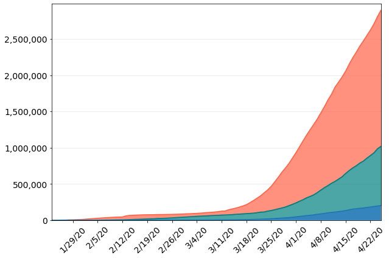

Confirmed
Recovered
Fatalities

The number of COVID-19 cases is still increasing rapidly across the globe. Many of the countries that experienced the disease early on are beginning to recover. The first case in China was confirmed January 22, 2020. Then the countries that followed did not have their first case or significant increase in cases until early March. Recovered cases started to emerge approximately two weeks later.
As of mid-April, the proportion of recovered versus confirmed cases is about 20%-30% in Itay Spain and France; 45% in Germany; less than 1% in the U.K.; and 6% in the U.S. A wide variety of factors likely contribute to these differences such as human activity prior to social distancing, early mitigation efforts, and healthcare for COVID-19.

The number of infected equals confirmed cases minus recovered minus fatalities. China peaked at 60,005 infections on February 18, 2020. Infections started to spread in many European countries early March. Infections have started to come down in Iran and Germany - peaking at 38,490 and 74,674 on April 5 and 6, respectively. The number of infections in the U.S. surpassed all other countries on March 26 and is now more than four-times any other country so far.
Many people might be asking, "Have we flattened the curve?" While it is difficult to determine what exactly causes the number of new cases to decline, the good news is that several countries have seen a decrease in the last 1-2 weeks. For U.S. and France, it is too soon to tell if the number of new cases has reached a peak but the rate of increase has slowed. China is back down to less than 100 new cases per day, while many countries are still deep in the middle of their COVID-19 crisis.